Brazil
Brazil
The Brazil route: 3 regions, 12 landmarks. Every landmark is built in three stages.
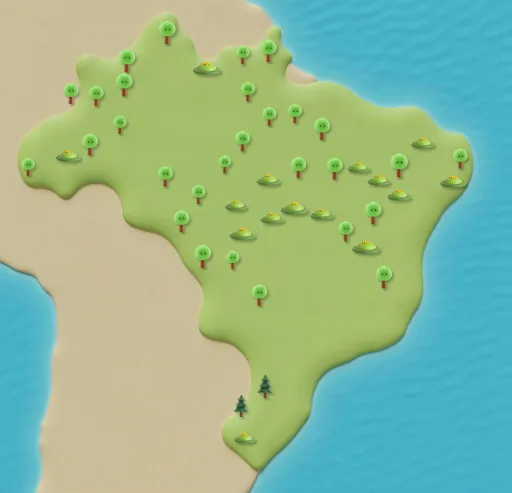
Amazon
Route steps 1–12
Manaus Opera House
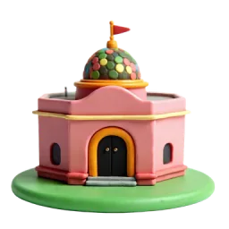
Stage 1 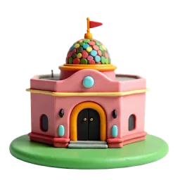
Stage 2 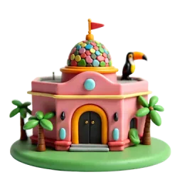
Stage 3 This opera house in the middle of the Amazon rainforest opened on 31 December 1896. Source: Wikipedia
Amazon Riverboat
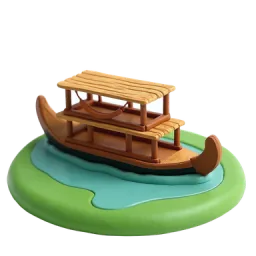
Stage 1 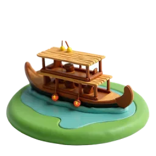
Stage 2 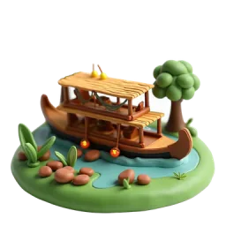
Stage 3 The Amazon carries more water than any other river on Earth, yet no bridge crosses its whole width. Source: Wikipedia
Meeting of the Waters
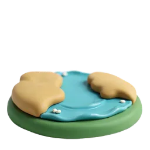
Stage 1 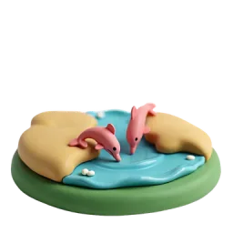
Stage 2 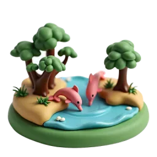
Stage 3 The dark Rio Negro and the pale Amazon flow side by side for 6 km without mixing. Source: Wikipedia
Rainforest Treehouse
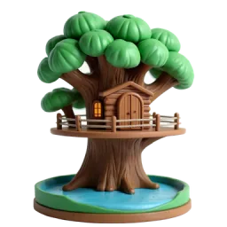
Stage 1 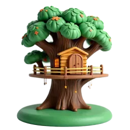
Stage 2 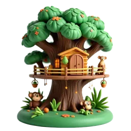
Stage 3 The Amazon rainforest is thought to have about 390 billion trees of around 16,000 different kinds. Source: Wikipedia
Lençóis · Northeast
Route steps 13–24
Lençóis Dunes and Lagoons
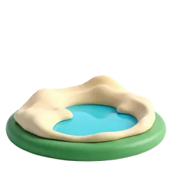
Stage 1 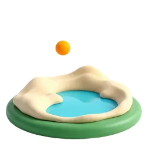
Stage 2 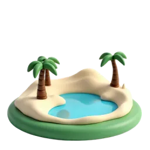
Stage 3 In the rainy season, the hollows between the sand dunes fill with freshwater lagoons. It became a UNESCO site in 2024. Source: Wikipedia
Pedra Furada, Jericoacoara
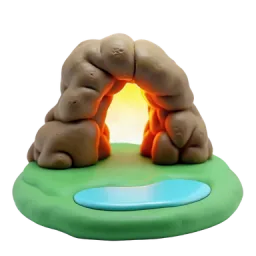
Stage 1 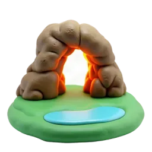
Stage 2 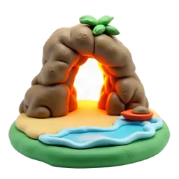
Stage 3 Pedra Furada is a huge rock arch, shaped like a doorway by the ocean waves. Source: Wikipedia
Fernando de Noronha Islands
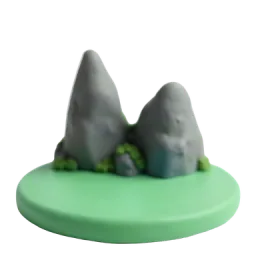
Stage 1 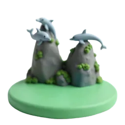
Stage 2 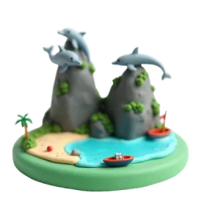
Stage 3 These islands became a UNESCO World Heritage Site in 2001 and are home to many spinner dolphins. Source: Wikipedia
Colourful Houses of Olinda
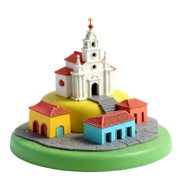
Stage 1 Stage 2 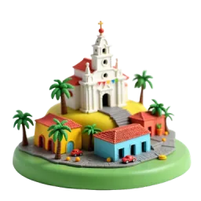
Stage 3 Founded in 1535, Olinda's colourful old centre was named a UNESCO World Heritage Site in 1982. Source: Wikipedia
Salvador · Bahia
Route steps 25–36
Colourful Pelourinho
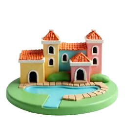
Stage 1 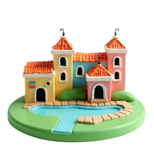
Stage 2 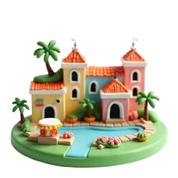
Stage 3 Salvador's colourful old centre, Pelourinho, became a UNESCO site in 1985 and is a heart of Afro-Brazilian music. Source: Wikipedia
Lacerda Elevator
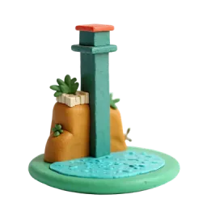
Stage 1 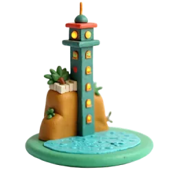
Stage 2 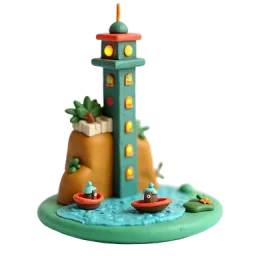
Stage 3 Finished in 1873, this 72-metre elevator links the lower and upper city in a 30-second ride. Source: Wikipedia
Barra Lighthouse
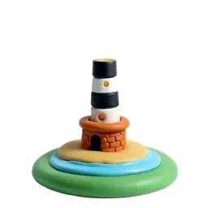
Stage 1 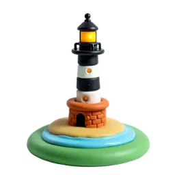
Stage 2 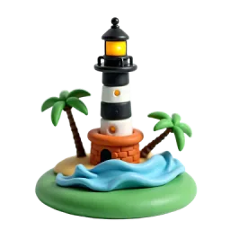
Stage 3 Today's lighthouse was built in 1839; its 22-metre tower is painted with black and white stripes. Source: Wikipedia
Morro de São Paulo Beach
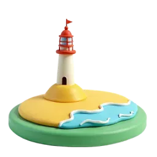
Stage 1 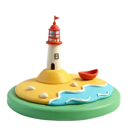
Stage 2 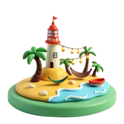
Stage 3 Morro de São Paulo's beaches are named with numbers: First, Second, Third, Fourth and Fifth Beach. Source: Wikipedia